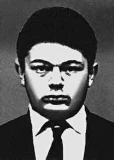

Chael
Charles
Schreier
CIRCUNSTÂNCIAS DA MORTE
A Informação no 1.039/69, da 1ª Divisão de Infantaria do I Exército da Vila Militar, datada de 24 de novembro de 1969, registra que Chael Charles Schreier e os companheiros teriam resistido à prisão por meio de disparos de arma de fogo e do lançamento de bombas de fabricação caseira.
Os militantes teriam saído feridos do confronto e recebido atendimento médico na 1ª Companhia da Polícia do Exército e, ainda de acordo com o documento, Chael Charles Schreier, por estar apresentando ferimento profundo no queixo, recebeu aplicação de antibióticos-procaína comprimido contra enjoo e soro antitetânico, além de curativos com mercúrio cromo e água oxigenada.
Sobreveio em Chael um ataque com características de parada cardíaca, passando a apresentar a boca cheia de espuma, babando, revirando os olhos, ocasião em que foi atendido pelo sargento enfermeiro da 1ª Cia PE e um sargento auxiliar de Educação Física, enquanto se providenciava a vinda de um médico. Aplicado o recurso da respiração artificial, o mesmo não produziu resultado, vindo Chael a falecer.
No entanto, fotos encontradas no acervo do DOPS pela cineasta Anita Leandro, que exibem Chael da cintura para cima, sem camisa e nenhum ferimento aparente, comprovam que, ao chegar às dependências daquele órgão da repressão, o militante encontrava-se ileso, o que desmente a versão oficial sobre a morte de Chael. Ademais, em depoimento à CNV, prestado no dia 25 de julho de 2014, o sargento Euler Moreira de Moraes, responsável pela prisão de Chael, alega que capturou o militante sem efetuar nenhum disparo, e que o entregou à prisão ileso: “Eu levava um megafone. Eu ou outro qualquer, e dizia ‘a casa está cercada, vamos sair sem que haja violência’. Falei isso várias vezes e alguns disparos foram efetuados de lá para cá. Então, não houve alternativa. Tem janela aberta e nós vamos jogar granada de gás lacrimogênio por intermédio do nosso aparelho. Aquilo contaminou o ambiente e ficou insuportável. Saiu o Charles e se entregou. Saiu com a mão na cabeça. ‘Não me mate, não me mate’. ‘Eu não vou lhe matar, convença os demais a saírem’. Ele convenceu. E todos saíram e eu cheguei e entreguei todos os presos sem nenhuma lesão.”
A família foi informada da morte de Chael somente no dia 25 de novembro. Como informa o “Dossiê Ditadura”, seu corpo foi entregue aos familiares em caixão lacrado e o traslado para São Paulo foi realizado sob vigilância de agentes do II Exército, que proibiram a realização do ritual judaico de sepultamento, a fim de se evitar que o caixão fosse aberto e que os ferimentos de Chael fossem constatados.
Em 24 de janeiro de 2014, Antônio Espinosa relatou em depoimento à CNV que o corpo de Chael chegou a ser levado a uma sinagoga em São Paulo e que, nesse local, apesar da vigilância dos agentes de segurança, dois jornalistas da revista Veja, Bernardo Kucinski e Raimundo Pereira, além de uma junta médica, puderam constatar os ferimentos que denunciavam a tortura de Chael.
O Dossiê Ditadura atesta que o militante foi visto pela última vez pelos companheiros da VAR-Palmares “com o pênis dilacerado e o corpo ensopado do sangue que vertia de vários ferimentos, entre eles um profundo corte na cabeça”.
Information No. 1,039/69, from the 1st Infantry Division of the 1st Army of Vila Militar, dated November 24, 1969, records that Chael Charles Schreier and his companions resisted arrest by firing firearms and throwing homemade bombs.
The militants were injured in the confrontation and received medical care at the 1st Company of the Army Police and, according to the document, Chael Charles Schreier, as he had a deep wound on his chin, received antibiotics - procaine anti-nausea pill and anti-tetanus serum, as well as bandages with chromium mercury and hydrogen peroxide.
Chael suffered an attack with the characteristics of cardiac arrest, causing him to have a mouth full of foam, drooling, rolling his eyes, at which time he was attended to by the nursing sergeant from the 1st PE Company and an assistant Physical Education sergeant, while arrangements were made for a doctor to arrive. When artificial respiration was applied, it produced no results and Chael died.
However, photos found in the DOPS collection by filmmaker Anita Leandro, which show Chael from the waist up, with no shirt and no apparent injuries, prove that, upon arriving at the premises of that repressive body, the militant was unharmed, which contradicts the official version of Chael's death. Furthermore, in a statement to the CNV, given on July 25, 2014, Sergeant Euler Moreira de Moraes, responsible for Chael's arrest, claims that he captured the militant without firing any shots, and that he delivered him to prison unharmed: "I was carrying a megaphone. Me or someone else, and I said 'the house is surrounded, let's get out without violence'. I said that several times and some shots were fired from there. So, no There was an alternative. There was an open window and we were going to throw tear gas grenades through our device. It contaminated the environment and it became unbearable. Charles came out and handed himself over. 'Don't kill me, don't kill me.'
The family was only informed of Chael's death on November 25th. As reported in the “Dictadura Dossier”, his body was handed over to his family in a sealed coffin and the transfer to São Paulo was carried out under the supervision of agents from the Second Army, who prohibited the Jewish burial ritual from being carried out, in order to prevent the coffin from being opened and Chael's injuries from being discovered.
On January 24, 2014, Antônio Espinosa reported in a statement to the CNV that Chael's body was taken to a synagogue in São Paulo and that, there, despite the surveillance of security agents, two journalists from Veja magazine, Bernardo Kucinski and Raimundo Pereira, as well as a medical team, were able to see the injuries that revealed Chael's torture.
The Ditadura Dossier attests that the militant was last seen by his VAR-Palmares comrades “with his penis torn apart and his body soaked with blood that was leaking from several wounds, including a deep cut on his head”.
La información No. 1.039/69, de la 1.ª División de Infantería del 1.º Ejército de Vila Militar, de 24 de noviembre de 1969, registra que Chael Charles Schreier y sus compañeros resistieron el arresto disparando armas de fuego y lanzando bombas caseras.
Los militantes resultaron heridos en el enfrentamiento y recibieron atención médica en la 1.ª Compañía de la Policía del Ejército y, según el documento, Chael Charles Schreier, como tenía una herida profunda en el mentón, recibió antibióticos: pastilla de procaína contra las náuseas y suero antitetánico, además de vendajes con cromo mercurio y peróxido de hidrógeno.
Chael sufrió un ataque con características de paro cardíaco, lo que le provocó tener la boca llena de espuma, babear, poner los ojos en blanco, momento en el que fue atendido por la sargento de enfermería de la Compañía de Educación Física 1ª y un sargento auxiliar de Educación Física, mientras se hacían las gestiones para que llegara un médico. Cuando se le aplicó respiración artificial, no produjo resultados y Chael murió.
Sin embargo, fotografías encontradas en la colección del DOPS de la cineasta Anita Leandro, que muestran a Chael de cintura para arriba, sin camisa y sin lesiones aparentes, prueban que, al llegar a las instalaciones de ese organismo represor, el militante resultó ileso, lo que contradice la versión oficial sobre la muerte de Chael. Además, en una declaración a la CNV, dada el 25 de julio de 2014, el sargento Euler Moreira de Moraes, responsable de la detención de Chael, afirma que capturó al militante sin disparar ningún tiro, y que lo entregó ileso a la cárcel: "Yo llevaba un megáfono. Yo o otra persona, y dije 'la casa está rodeada, salgamos sin violencia'. Lo dije varias veces y desde allí se hicieron algunos tiros. Entonces, no había alternativa. Había una ventana abierta y íbamos a lanzar granadas lacrimógenas a través de nuestro dispositivo. Contaminó el ambiente y se volvió insoportable. Charles salió y se entregó. 'No me mates, no me mates'.
La familia no fue informada de la muerte de Chael hasta el 25 de noviembre. Según informa el “Dossier Dictadura”, su cuerpo fue entregado a su familia en un ataúd sellado y el traslado a São Paulo se realizó bajo la supervisión de agentes del Segundo Ejército, quienes prohibieron la realización del ritual de entierro judío, para evitar que se abriera el ataúd y se descubrieran las heridas de Chael.
El 24 de enero de 2014, Antônio Espinosa informó en declaración a la CNV que el cuerpo de Chael fue llevado a una sinagoga en São Paulo y que, allí, a pesar de la vigilancia de agentes de seguridad, dos periodistas de la revista Veja, Bernardo Kucinski y Raimundo Pereira, además de un equipo médico, pudieron ver las heridas que revelaban las torturas de Chael.
El Dossier Ditadura constata que el militante fue visto por última vez por sus compañeros del VAR-Palmares “con el pene destrozado y el cuerpo empapado de sangre que manaba de varias heridas, incluido un corte profundo en la cabeza”.